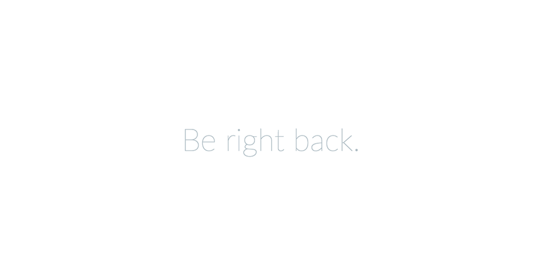

Mettre manuellement votre application Laravel en maintenance
Il arrive des fois que l’on soit forcé d’utiliser un hébergement mutualisé pour mettre en ligne son application tournant sur Laravel. Impossible donc d’utiliser le puissant outil Artisan inclus dans le framework puisqu’il faut avoir accès à PHP en ligne de commande.
J’ai vu passer de nombreuses solutions sur le net, toutes plus complexes les unes que les autres, à base, part exemple, de Middleware à intégrer dans le fichier de route (dans mes souvenirs, c’était le moins crade que j’ai vu).

Et pourtant, il existe une solution vraiment très simple : il suffit d’aller voir ce que fait la commande php artisan down tout simplement !
La fonction est disponible dans le fichier /vendor/laravel/framework/src/Illuminate/Foundation/Console/DownCommand.php et effectue une action vraiment très simple : elle crée un fichier vide appelé down, sans aucune extension, dans le dossier /storage/framework/.
Désormais, plus besoin de se prendre la tête à réfléchir à une solution super compliquée pour mettre votre app Laravel en maintenance, comme vous pouvez le voir cela ne prend que quelques secondes !
PS : pour sortir de la maintenance, supprimez tout simplement le fichier /storage/framework/down.